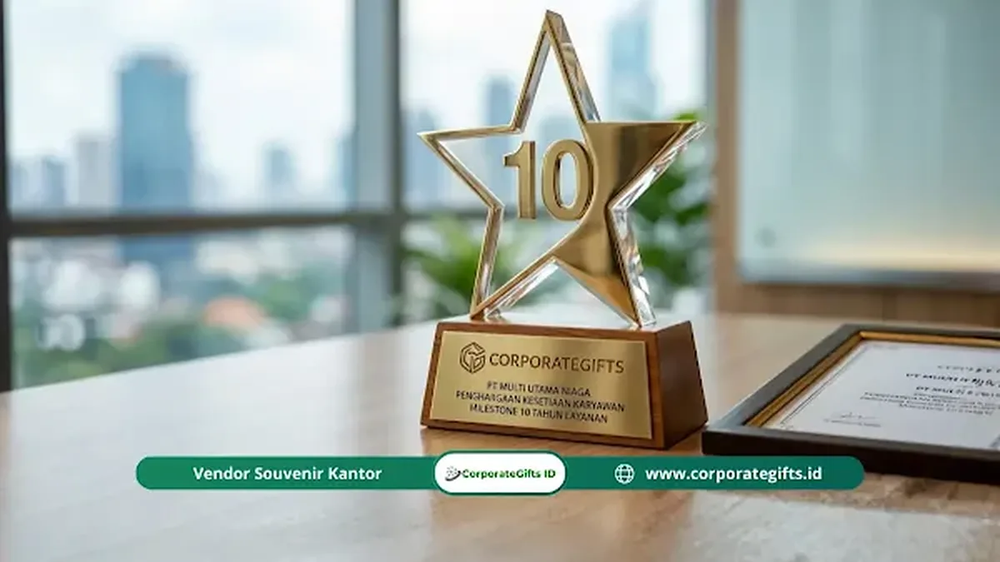

Corporate Gifts ID - Milestone karyawan adalah pencapaian atau momen penting dalam perjalanan kerja seorang karyawan, seperti anniversary kerja, promosi, atau pensiun, yang diakui secara resmi oleh perusahaan sebagai bentuk apresiasi.
- Jenis milestone karyawan terbagi menjadi dua kategori utama: berbasis waktu (anniversary kerja) dan berbasis peristiwa (promosi, sertifikasi, pensiun).
- Merayakan milestone bukan sekadar tradisi, melainkan strategi retensi yang terbukti menurunkan angka turnover karyawan.
- Milestone berbeda dari KPI karena berfokus pada perjalanan manusia, bukan angka performa semata.
- Program milestone yang terstruktur meningkatkan keterlibatan karyawan hingga dua kali lipat dibanding perusahaan tanpa program serupa.
- Panduan ini membahas definisi, jenis, manfaat, dan langkah membangun program employee milestone yang lengkap.
Banyak perusahaan di Indonesia sudah memiliki target KPI yang ketat, sistem evaluasi berkala, dan bonus performa. Namun satu hal sering terlewat: merayakan momen penting dalam perjalanan seorang karyawan.
Milestone karyawan adalah titik-titik signifikan dalam karier seseorang yang, bila diakui dengan tepat, mampu mengubah cara karyawan memandang tempat mereka bekerja.
Panduan ini menjelaskan secara tuntas pengertian milestone karyawan, jenis-jenisnya, mengapa hal ini krusial bagi perusahaan modern Indonesia, dan bagaimana konsep ini menjadi fondasi dari keseluruhan program employee milestone yang efektif.
Apa itu Milestone Karyawan?
Milestone karyawan adalah setiap pencapaian atau peristiwa bermakna dalam perjalanan kerja seorang karyawan yang menandai kemajuan, loyalitas, atau transisi penting dalam karier mereka di sebuah organisasi.
Kata "milestone" berasal dari tradisi perjalanan darat, yaitu batu penanda jarak yang memberi tahu pelancong bahwa mereka telah menempuh sejauh tertentu.
Dalam konteks pekerjaan, milestone karyawan berfungsi sama: penanda bahwa seseorang telah menempuh perjalanan yang nyata bersama perusahaan.
Milestone bukan sekadar tanggal di kalender, melainkan momen yang memiliki makna emosional dan profesional bagi individu maupun tim.
Menurut Society for Human Resource Management (SHRM), perusahaan yang secara aktif mengakui milestone karyawan melaporkan tingkat keterlibatan 63% lebih tinggi dibandingkan perusahaan yang tidak memiliki program serupa (SHRM Employee Recognition Survey, 2023).
Data ini menegaskan bahwa milestone bukan program tambahan, melainkan investasi strategis dalam modal manusia.
Milestone karyawan mencakup dua kategori besar: milestone berbasis waktu seperti anniversary kerja 1, 3, 5, atau 10 tahun, dan milestone berbasis peristiwa seperti promosi, kelulusan pelatihan, atau penyelesaian proyek besar.
Keduanya sama-sama berharga dan layak mendapat pengakuan resmi dari perusahaan.
Apa Saja Jenis Milestone Karyawan?
Jenis milestone karyawan terbagi menjadi dua kategori utama, yaitu milestone berbasis waktu dan milestone berbasis peristiwa, yang masing-masing memiliki pemicu dan cara perayaan yang berbeda.
Milestone Berbasis Waktu
Milestone berbasis waktu adalah jenis milestone yang muncul secara berkala mengikuti lama masa kerja karyawan, seperti anniversary 1, 3, 5, 10, hingga 20 tahun.
Jenis ini paling mudah direncanakan karena tanggalnya dapat diprediksi jauh hari, sehingga cocok menjadi fondasi awal bagi perusahaan yang baru membangun program recognition.
Milestone Berbasis Peristiwa
Milestone berbasis peristiwa adalah jenis milestone yang terjadi ketika karyawan mencapai transisi atau pencapaian tertentu, seperti promosi jabatan, kelulusan sertifikasi, penyelesaian proyek besar, atau pensiun.
Jenis ini menuntut sistem pemantauan yang lebih aktif dari tim HR karena waktunya tidak selalu bisa diprediksi seperti anniversary tahunan, namun dampaknya pada motivasi individu cenderung lebih besar karena terjadi tepat pada momen pencapaian.
Mengapa Milestone Karyawan Penting bagi Perusahaan?
Milestone karyawan penting karena pengakuan atas momen bermakna menciptakan ikatan emosional antara karyawan dan organisasi yang secara langsung memengaruhi retensi dan produktivitas.
Dampak Langsung pada Keterlibatan Karyawan
Karyawan yang merasa diakui bekerja lebih baik dan bertahan lebih lama.
Gallup melaporkan bahwa 65% karyawan yang berhenti dari pekerjaan menyebutkan kurangnya pengakuan sebagai salah satu alasan utama mereka resign (Gallup State of the Global Workplace, 2023).
Angka ini menunjukkan bahwa ketidakhadiran program milestone bukan hanya persoalan budaya, melainkan risiko finansial nyata bagi perusahaan.
Membangun Identitas dan Rasa Memiliki
Ketika perusahaan merayakan milestone seorang karyawan, pesan yang tersampaikan sederhana namun kuat: "Kami melihat perjalanan Anda, dan itu berarti bagi kami."
Pesan ini membangun rasa memiliki yang tidak bisa dibeli hanya dengan kenaikan gaji. Rasa memiliki mendorong karyawan untuk bertindak seperti pemilik bisnis, bukan sekadar pekerja.
Memperkuat Budaya Perusahaan Secara Organik
Program milestone yang konsisten menciptakan narasi budaya perusahaan yang nyata.
Setiap perayaan anniversary atau promosi menjadi cerita yang beredar di antara tim, memperkuat nilai-nilai organisasi secara organik tanpa perlu kampanye internal yang mahal.
Apa Perbedaan Milestone Karyawan dan KPI?
Milestone karyawan berbeda dari KPI karena milestone mengukur perjalanan manusia dan momen bermakna, sementara KPI mengukur hasil kerja terhadap target bisnis yang terukur secara numerik.
| Aspek | Milestone Karyawan | KPI (Key Performance Indicator) |
|---|---|---|
| Fokus | Perjalanan dan momen manusia | Hasil dan angka performa bisnis |
| Frekuensi | Terjadi pada titik-titik penting | Diukur secara periodik (bulanan/kuartal) |
| Emosi yang dituju | Rasa diakui dan dihargai | Motivasi mencapai target |
| Contoh | Anniversary 5 tahun, promosi pertama | Tingkat konversi, revenue per karyawan |
| Dampak utama | Loyalitas dan retensi jangka panjang | Produktivitas jangka pendek hingga menengah |
Kedua elemen ini bukan kompetitor, melainkan saling melengkapi. Karyawan yang performanya diukur oleh KPI tetap membutuhkan pengakuan milestone agar mereka merasa dihargai sebagai manusia, bukan sekadar angka di laporan HR.
Apa Saja Contoh Milestone Karyawan yang Umum Dirayakan?
Contoh milestone karyawan yang umum dirayakan meliputi anniversary kerja tahunan, promosi jabatan, onboarding hari pertama, pencapaian sertifikasi, dan momen pensiun setelah masa kerja panjang.
Berikut adalah daftar milestone karyawan yang paling sering dijumpai dalam program recognition perusahaan di Indonesia:
- Hari pertama bekerja (onboarding milestone): Momen yang menentukan kesan pertama karyawan terhadap budaya perusahaan.
- Anniversary kerja tahunan (1, 3, 5, 10, 15, 20 tahun): Penanda loyalitas yang paling umum dirayakan.
- Promosi jabatan pertama: Transisi karier yang memiliki dampak emosional besar bagi individu.
- Penyelesaian pelatihan atau sertifikasi: Menghargai investasi karyawan dalam pengembangan diri.
- Penyelesaian proyek besar atau kontrak penting: Mengakui kontribusi langsung pada hasil bisnis.
- Kelahiran anak atau pernikahan: Milestone pribadi yang, bila diakui perusahaan, menciptakan loyalitas emosional yang kuat.
- Pensiun: Penutupan perjalanan karier yang layak mendapat penghormatan terbesar.
Tidak semua milestone di atas harus dirayakan dengan cara yang sama. Perusahaan perlu menentukan prioritas milestone berdasarkan dampak emosional pada karyawan dan anggaran recognition yang tersedia.

Bagaimana Milestone Karyawan Memengaruhi Retensi?
Milestone karyawan memengaruhi retensi karena pengakuan yang konsisten membangun koneksi emosional antara individu dan organisasi, sehingga menurunkan intensi karyawan untuk mencari pekerjaan di tempat lain.
Mekanisme Psikologis di Balik Pengakuan
Pengakuan milestone bekerja melalui prinsip psikologi dasar: manusia memiliki kebutuhan mendasar untuk merasa dilihat dan dihargai.
Ketika kebutuhan ini terpenuhi di tempat kerja, karyawan mengembangkan rasa keterikatan yang sulit diputus hanya karena tawaran gaji lebih tinggi dari kompetitor.
Ini yang sering disebut praktisi HR sebagai "emotional stickiness" atau kelekatan emosional.
Data Retensi yang Tidak Bisa Diabaikan
Perusahaan dengan program recognition terstruktur mengalami turnover 31% lebih rendah dibandingkan perusahaan tanpa program serupa (Bersin by Deloitte, 2022).
Dalam konteks biaya penggantian karyawan yang rata-rata mencapai 50-200% dari gaji tahunan posisi tersebut, angka ini memiliki implikasi finansial yang sangat signifikan bagi perusahaan Indonesia.
Retensi sebagai Efek Berantai
Karyawan yang bertahan lama membawa pengetahuan institusional yang tidak ternilai. Mereka menjadi mentor bagi karyawan baru, penjaga budaya perusahaan, dan aset yang mempersingkat kurva pembelajaran tim secara keseluruhan.
Program milestone yang berhasil mempertahankan satu karyawan senior bisa berdampak pada produktivitas seluruh tim selama bertahun-tahun.
Bagaimana Cara Memulai Program Milestone Karyawan?
Cara memulai program milestone karyawan adalah dengan memetakan momen-momen penting yang relevan untuk perusahaan Anda, menetapkan standar pengakuan untuk setiap milestone, lalu membangun sistem pelaksanaan yang konsisten.
Langkah-Langkah Dasar Membangun Program Milestone
- Audit milestone yang sudah ada: Identifikasi apakah perusahaan Anda sudah merayakan milestone tertentu secara informal. Formalisasi yang sudah berjalan lebih mudah daripada membangun dari nol.
- Tentukan milestone prioritas: Tidak semua milestone harus dirayakan pada tahap awal. Mulai dengan anniversary tahunan dan promosi sebagai fondasi.
- Tetapkan standar pengakuan: Tentukan bentuk pengakuan untuk setiap milestone: kartu ucapan, sertifikat, hadiah fisik, atau pengumuman publik di depan tim.
- Bangun sistem pemantauan: Gunakan HRIS atau kalender HR untuk memastikan tidak ada milestone yang terlewat karena kesibukan operasional.
- Latih manajer lini: Manajer adalah eksekutor utama program milestone. Mereka perlu memahami pentingnya merayakan momen ini dengan tulus, bukan sekadar formalitas.
- Evaluasi dan kembangkan: Kumpulkan umpan balik dari karyawan secara berkala untuk menyempurnakan program.
Pertanyaan Umum tentang Milestone Karyawan (FAQ)
Kesimpulan
Milestone karyawan adalah fondasi dari setiap program pengakuan yang bermakna.
Memahami definisinya, mengenali jenis-jenisnya, membedakannya dari KPI, dan menyadari dampaknya terhadap retensi adalah langkah pertama yang tidak bisa dilewati oleh pemimpin HR manapun yang serius membangun budaya kerja yang kuat.
Data dari SHRM dan Gallup secara konsisten menunjukkan bahwa pengakuan milestone bukan pengeluaran tambahan, melainkan investasi dengan ROI yang terukur.
Langkah selanjutnya adalah mengidentifikasi milestone mana yang paling relevan untuk konteks perusahaan Anda, lalu mulai membangun sistem yang memastikan tidak ada momen penting karyawan yang terlewat.
Disclaimer: Informasi dan panduan dalam artikel ini disusun berdasarkan praktik terbaik manajemen SDM dan standar evaluasi employee recognition di industri korporasi. Penerapan dapat disesuaikan dengan skala dan struktur masing-masing perusahaan.